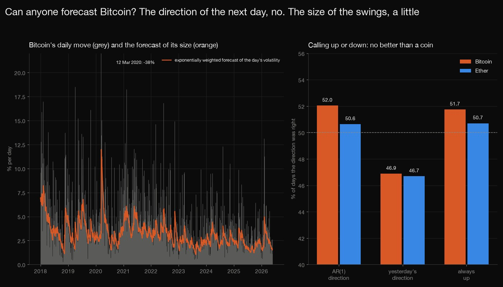
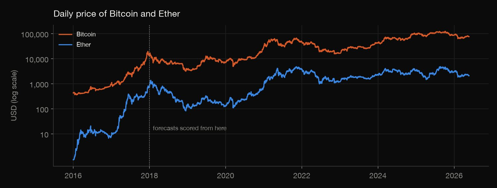
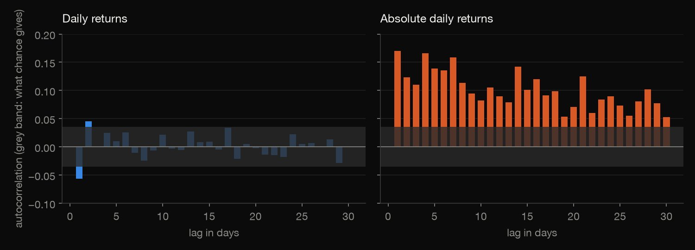
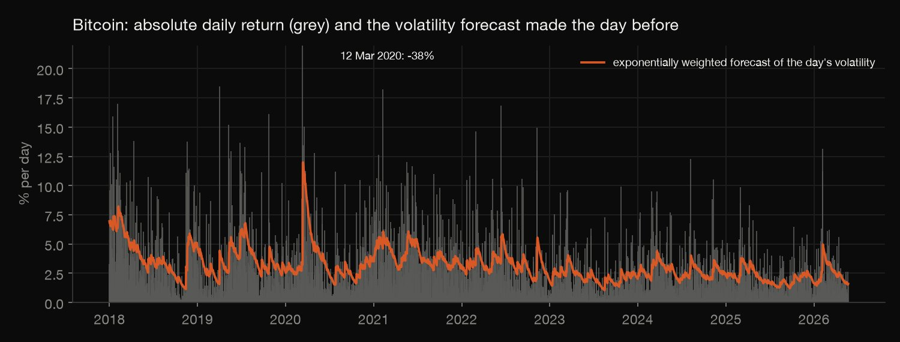
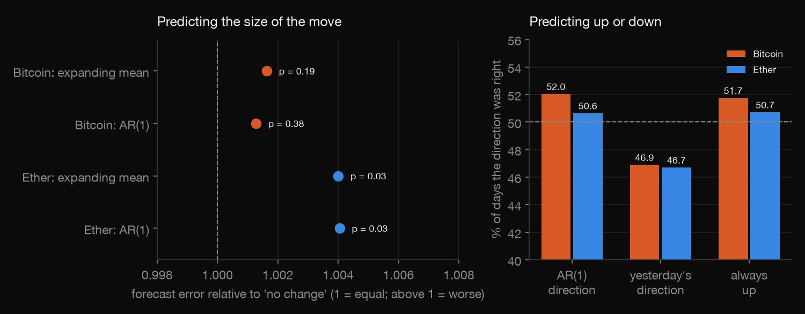
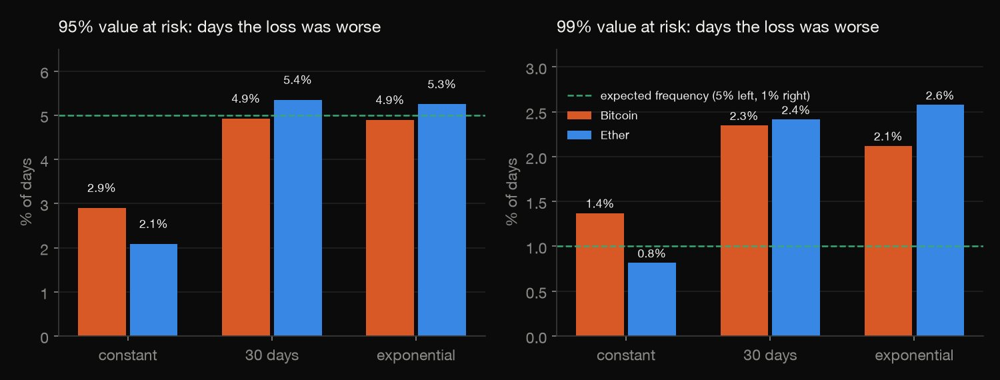

Python · Forecasting · 2026-10
Can Anyone Forecast Bitcoin?
Walk-forward tests on 3,065 days of Bitcoin and Ether: no model beat "no change" for the size of the next return, the direction was no better than a coin (yesterday's direction was right only 47% of the time), the size of the swings could be forecast a little, and a normal-quantile risk limit failed at 99%.

Forecast skill is not trading profit: no costs or positions were tested. Several models and tests are reported for two assets and one period (2018 to 2026), with no correction for how many were tried, so the p-values are nominal, and Bitcoin and Ether move together. PriceUSD is a daily reference snapshot. QLIKE is dominated by a few extreme days (12 March 2020 above all). Value at risk uses normal quantiles on purpose, to show where they fail. Free for non-commercial use (CC BY-NC 4.0).
01 — The problem
Every crypto tutorial plots the price, fits an ARIMA model and draws a forecast line. Does any of it work, tested honestly: with forecasts made from past data only, and scored on days they never saw?
The questions follow GeeksforGeeks' "Time Series Analysis with Cryptocurrency Data". The data is the daily price of Bitcoin and Ether from the Coin Metrics community data, 2016 to May 2026: real and public, not a course file.
02 — What I built
Two price series, tested one forecast at a time:
- The returns: spread, tails, and the autocorrelation of returns and of absolute returns.
- Return forecasts: no change, an expanding mean and an AR(1), walking forward and scored against "no change", for size and direction.
- Volatility and risk: constant, 30-day and exponential forecasts, QLIKE, and a value-at-risk backtest.
- Check:
check.pywrites out every statistic and test in plain Python: 218 numbers.
03 — How it was built
- 01
Download the two price series
Coin Metrics' community data: the daily reference price of Bitcoin (from 2010) and Ether (from 2015) to 23 May 2026, with no missing days. Only the date and price columns are committed, with checksums of the originals. Log returns are computed from 1 January 2016, and forecasts are scored from 1 January 2018.
- 02
Describe the returns
Spread, skew and tails of the 3,065 scored days, and the autocorrelation of returns, absolute returns and squared returns with Ljung-Box tests. The standard autocorrelation: the covariance at a lag over the variance.
x = np.asarray(x); m = x.mean(); return float(((x[:-k] - m) * (x[k:] - m)).sum() / ((x - m) ** 2).sum()) - 03
Forecast the return, walking forward
Every forecast for a day uses only the returns before it: no change (zero), the expanding mean, and an AR(1) refitted on all returns so far from running sums. Squared errors are compared with those of "no change" by a Diebold-Mariano test with a Newey-West variance; the direction is scored against the hit rate chance would give.
var = (g(0) + 2 * sum((1 - l / (lags + 1)) * g(l) for l in range(1, lags + 1))) / n; t = d.mean() / np.sqrt(var); return float(t), float(2 * stats.norm.sf(abs(t))) - 04
Forecast the swings, and test the risk limit
Volatility one day ahead from the expanding mean of squared returns, the mean over 30 days, and an exponentially weighted average (weight 0.94 on the past), scored by QLIKE and by how well each ranks the next day's absolute return. Value at risk at 95% and 99% is the normal quantile times the forecast volatility; Kupiec's test checks how often it is exceeded and Christoffersen's whether the exceptions cluster.
ew = LAM * ew + (1 - LAM) * x[i - 1] ** 2 if i > ROLL else ew - 05
Recompute it by hand
check.pywrites out every statistic and test in plain Python from the two price files, with no pandas, numpy or scipy: the returns and Ljung-Box tests, every walk-forward forecast, the Diebold-Mariano tests, the exact binomial tests, QLIKE, the correlations and both value-at-risk tests.lr = -2 * (ll(p) - ll(x / n)); return lr, chi2_sf_1(lr)
04 — Results

| Since 2018 | Bitcoin | Ether |
|---|---|---|
| Daily sd | 3.42% | 4.49% |
| Excess kurtosis | 14.7 | 11.2 |
| Worst day | −37.5% | −43.2% |
| Best day | +18.5% | +27.7% |
| Autocorr. r, lag 1 | −0.057 | −0.050 |
| Autocorr. |r|, lag 1 | 0.170 | 0.165 |
| Days beyond ±10% | 62 | 128 |
Wild returns. Daily returns of Bitcoin and Ether since 1 January 2018 (3,065 days), as log returns: within a fraction of a point of the percent change on ordinary days, so the worst and best days and the days beyond 10% are quoted as price changes. The kurtosis is the excess over a normal distribution (zero): the tails are far fatter. The worst day for both was 12 March 2020; Bitcoin's price rose or fell by more than 10% on 62 of 3,065 days and Ether's on 128.


Big days follow big days. The first autocorrelation of returns is −0.057 for Bitcoin and −0.050 for Ether (Ljung-Box p = 0.0075 and 0.0001): a small reversal. For absolute returns it is 0.170 and 0.165 at one day, 0.139 and 0.130 at five and 0.071 and 0.049 at twenty.
| One-day forecast | Bitcoin | Ether |
|---|---|---|
| Mean: error | +0.16% | +0.40% |
| AR(1): error | +0.13% | +0.41% |
| AR(1): right | 52.0% | 50.6% |
| Yesterday: right | 46.9% | 46.7% |
| Always up: right | 51.7% | 50.7% |

No model beat "no change." "Error" is how much larger the root-mean-square error of the one-day forecast is than that of a forecast of zero (Diebold-Mariano p = 0.19 and 0.031 for the expanding mean, 0.38 and 0.030 for AR(1), for Bitcoin and Ether). "Right" is the share of days the direction was called correctly; chance would give 51.6% and 50.7% for AR(1) (p = 0.63 and 0.96) and 50.1% and 50.0% for yesterday's direction. Betting on yesterday's direction was wrong more often than chance (p = 0.0005 and 0.0002): the reversal is real in sign, and too small to improve the size forecast.
| Volatility forecast | Bitcoin | Ether |
|---|---|---|
| Constant | 2.6% | 2.8% |
| 30-day mean | 7.2% | 5.2% |
| Exponential | 8.5% | 6.7% |
Volatility can be forecast, a little. The table is the share of the variation in the next day's absolute return explained by each volatility forecast. By QLIKE the exponential forecast beats the constant for Ether (gain 0.196, p < 0.0001) but not clearly for Bitcoin (gain 0.072, p = 0.23), where a few extreme days dominate; its rank correlation with the next day's absolute return is 0.288 and 0.245 against 0.153 and 0.149 for the constant.

Adaptive risk limits fail in the far tail. At 95% the adaptive forecasts are about right: the 30-day and exponential limits are exceeded on 4.9% and 4.9% of days for Bitcoin and 5.4% and 5.3% for Ether. At 99% they are exceeded on 2.1% to 2.6% of days (Kupiec p < 0.0001), 2.1 to 2.6 times too often. The constant limit is exceeded on 1.4% of days for Bitcoin and 0.8% for Ether at 99%, and on 2.9% and 2.1% at 95%.
05 — What I'd do next
- Fit a fat-tailed distribution (a Student t, or the empirical quantiles of standardised returns) and a GARCH model, and see how much of the value-at-risk failure they repair.
- Add the other assets in the same data, and a correction for the number of tests, to see whether the small reversal survives.
- Score a trading rule built on the reversal, with costs, which is a different question from forecast accuracy.